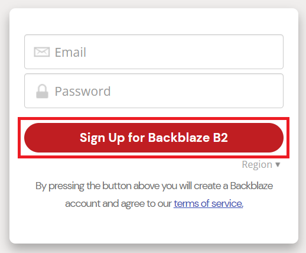
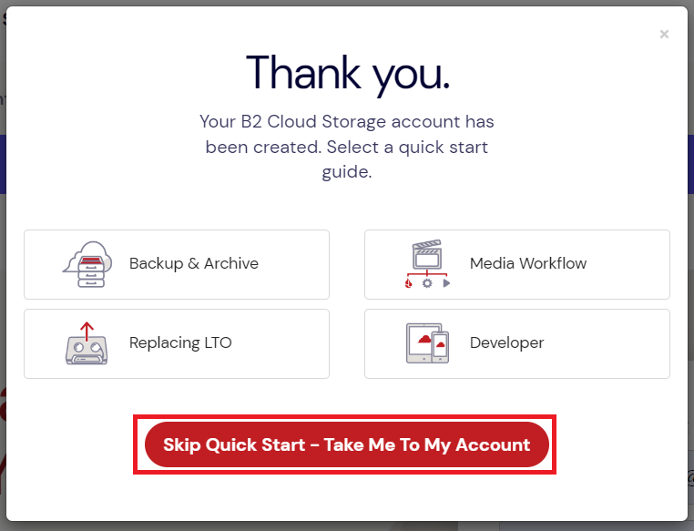
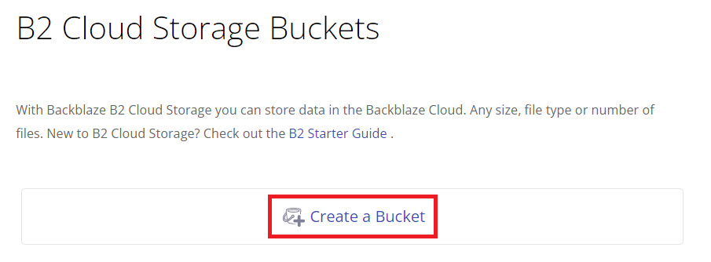
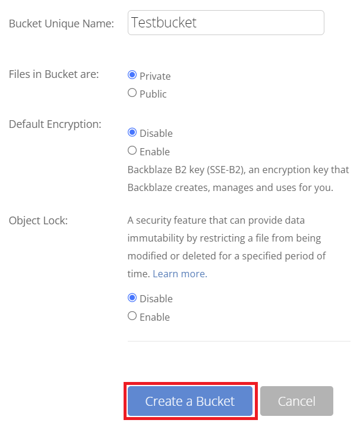
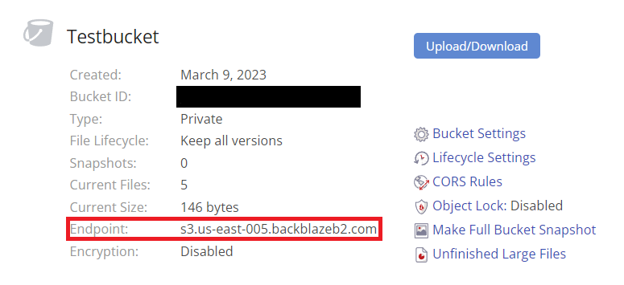
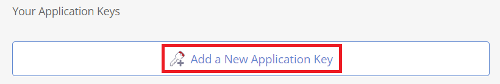
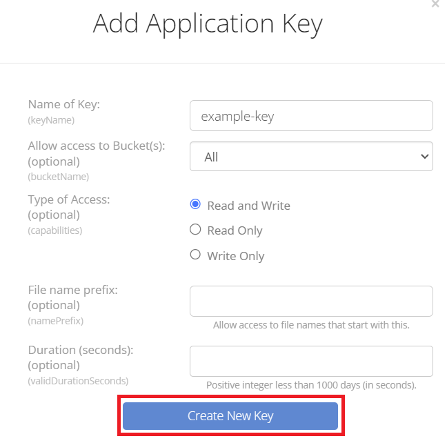
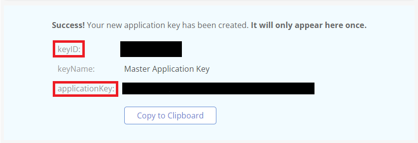

Backblaze
Backblaze is a cloud storage service. While Backblaze offers its own client and interface to its storage buckets, it is S3 compatible which means you can use it with existing S3 libraries like boto3.
This is a step-by-step guide on setting up your own free Backblaze account and setting it up to work with OYOclass' Python3 Editor.
Creating an Account
First, visit Backblaze's Account Creation Page and enter the email you want to use and a password:

After you successfully create an account, a window will pop up asking you if you want to read several guides. You can just click the Skip Quick Start button:

Creating a Bucket
To store data in an S3 service, we first need to make a bucket. Buckets are where files are stored in an S3 datatore. To create one with Backblaze, click on the Create a Bucket button:

A new window will pop up where you will be required to name your bucket and choose some settings on it. Take note of the following restrictions:
- Bucket names are globally unique, so you may not be able to name your bucket exactly what you want to
- Having files in your bucket be private requires you to verify your email first
After you choose your settings, click the Create a Bucket button at the bottom of the window:

Finding Your Bucket's Endpoint URL
To use an S3 access like boto3 requires you provide an endpoint URL to where the bucket exists. Once you create your bucket, you can see your bucket's endpoint URL in your bucket's info:

Managing Application Keys
Now that you have a bucket, we need to get access keys to authorize ourselves to access our bucket remotely. We can generate them easily by selecting App Keys on the left side of the page:
Then, click on Add a New Application Key:

Note
Backblaze offers a global access key, but their global key does not work with s3 clients like boto3. To support s3 clients, we must create a separate access key with this method.
A window will pop up asking you for various options. Just set the name of your key and click on Create New Key:

Finally, a box will show that has your keyID and applicationKey. This window will only ever show once, so if you lose your applicationKey, you will need to generate a new one. Be sure not to share these keys with anyone:

Congratulations! You have successfully set up your Backblaze bucket to work properly via remote connection. For a guide on how to get started using your bucket, check out the Python3 Editor Docs.